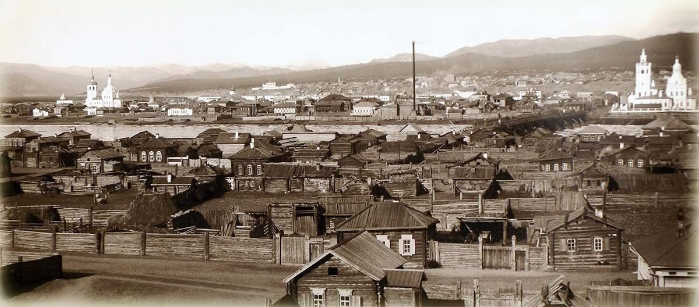
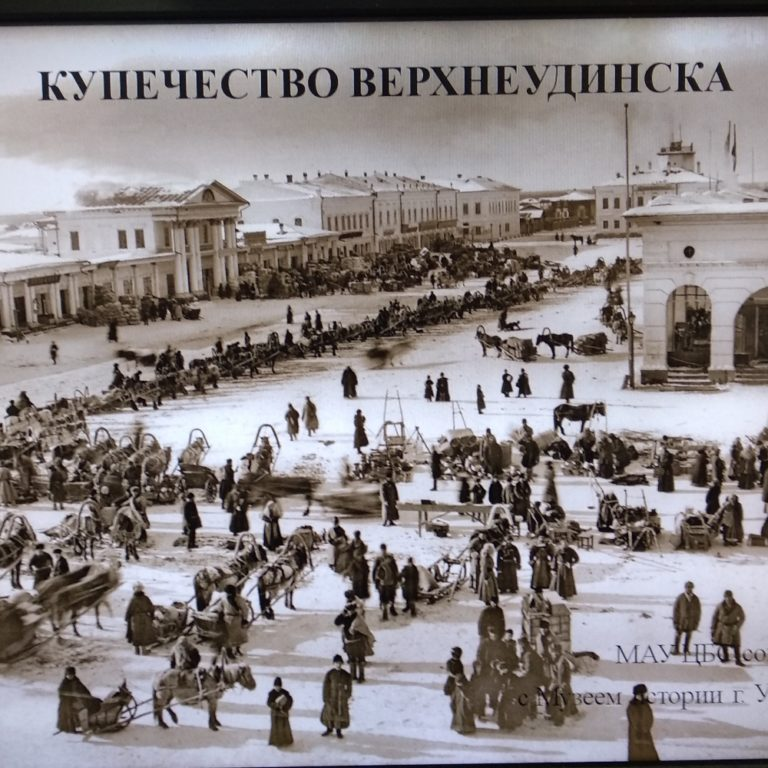

Истоки В 1666 году русский казачий отряд под руководством Гаврилы Ловцова поставил на высоком берегу, в устье реки Уда, избу для сбора ясака с местного населения и назвали его «Удинским казачьим зимовьем». Выбор места был продиктован благоприятными природными условиями, удобным стратегическим расположением. Недалеко от зимовья на реке Уда, находилась оживлённая речная переправа, со скалистого, с крутыми обрывами холма было очень удобно контролировать как долину реки Уды, так и селенгинские степи, поэтому Московское правительство приняло решение о строительстве укрепительных сооружений, и уже в 1680 году зимовье было преобразовано в острог. В 1689 году строительство было закончено, и острог стал административным и военным центром Забайкалья. В 1690г. острог получил статус города. Выгодное географическое положение на пути в Китай и Монголию позволило Верхнеудинску стать одним из важных торговых посредников России на востоке. Через него шли товары за границу и обратно. Среди вывозимых в Китай товаров первое место принадлежало пушнине и мерлушке, а с 40-х гг. XIX в. – мануфактурным изделиям.  Город делился на две части – городскую и слободскую. Городская часть состояла из деревянной крепости с башнями, пороховым погребом, артиллерийским цейхгаузом и гауптвахтой, а в слободской части размещались провиантские и заводские магазины, присутственные места, казармы, винные амбары, торговые лавки, частные дома и церкви. Удинский острог был вооружён артиллерией, имел собственные хлебные и пороховые запасы. Ими снабжались служилые люди, которые шли на восток. Город Удинск находился на самом удобном транспортном пути в Восточное Забайкалье (Нерчинский край), который впоследствии стал официальной дорогой в Китай. Из далёкой восточной страны везли великолепный шёлк, ароматный чай. Из других городов России привозили разные товары.
К 1700 г. город имел «население более 300 душ мужского пола». Население города занималось торговлей, хлебопашеством, ремеслами, перевозкой товаров, охотой, рыбной ловлей. Буряты, кочевавшие по долинам Уды и Селенги, постепенно усваивали навыки земледелия, перенимали некоторые более совершенные орудия производства и виды ремесел. До петровских градообразовательных реформ Верхнеудинск, как и многие другие города, строился бессистемно, беспорядочно. Улицы были кривые, узкие, дома строились в основном по берегу Уды. Эту часть города часто заливало водой во время наводнений. А близкое расстояние между домами приводило к частым пожарам. Поэтому городские власти ввели распоряжение о ведении строительства жилых домов строго по плану. Основные улицы сложились параллельно реке Уда. К 1735 г. Удинск был переименован в Верхнеудинск. Главным украшением любого города, символом его престижа считались церкви. Первая церковь — деревянная церковь Верховных Апостолов Петра и Павла, была построена вблизи острога, под горой. В 1741г. началось строительство первой каменной церкви в честь божьей матери Одигитрии.  В административном отношении Верхнеудинск входил в состав Иркутского воеводства и управлялся назначенными воеводой приказчиками. По мере освоения территории Забайкалья и оживления, мирных торгово-меновых и бытовых отношений между бурятами, русскими, проведением сухопутного Сибирского тракта, развитием русско-китайской торговли исчезновением военной опасности Верхнеудинск утрачивает функцию центра сбора ясака и военное значение. Поэтому на первый план выдвигаются торговые, транспортные и административные функции. С 1780 года Верхнеудинск был преобразован в уездный город Иркутской губернии. С 1780 года в городе стали проводиться ярмарки торговые два раза в год. В 1790 году городу был присвоен герб, подчеркивающий торговое значение города.